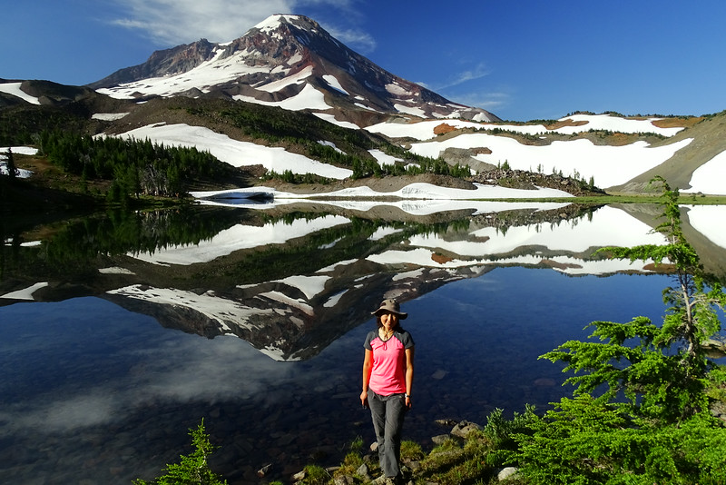

Jonathan D. recommends Backcountry Navigator as maps application. I've found that other maps sometimes have all the trails, but don't have the names. This has both and is quite affordable at $10.
Kelly liked doing the Timberline Trail around Mt. Hood in one day (grueling but doable). Also wants to do the Enchantments near Seattle.
Salt Creek Falls, it was the one you stopping in high school on the way to Reno. https://www.google.com/maps/place/Salt+Creek+Falls/@41.8868,-121.6097879,7.03z/data=!4m13!1m7!3m6!1s0x54c7165a48984047:0xa93bbb9d5b81c9c9!2sSalt+Creek+Falls!3b1!8m2!3d43.611959!4d-122.1284026!3m4!1s0x54c7165a48984047:0xa93bbb9d5b81c9c9!8m2!3d43.611959!4d-122.1284026
Highest trail on Mt Hood, Cooper Spur. Goes up to 8000 feet. But…hiking in Palm Springs was at 9000 feet and that was ok.
Eclipse guy from Germany liked Eagle Creek trail in Gorge, as well as Painted Hills
Pastor Matt liked Belknap Hot Springs, very peaceful. Also Mirror Lake, and the walk up to Tom, Dick, and Harry ridge.
Mr. Ocker liked Humbug mountain in way southern Oregon.
quiet, sudden weather changes, westernmost point in Oregon, “positively melancholy,” beautiful, wild, two tectonic fault lines run through it, raw nature, wild turkeys, deer, rabbits, squirrels, pounding surf. Oh–and it's about 6 hours from Portland.
Gorge trail closures: http://katu.com/news/local/the-wait-is-almost-over-some-gorge-trails-to-reopen-crews-hike-eagle-creek-for-1st-time
Went on trip with Mr. Wilburn to Camp Lake http://guy.smugmug.com/Outdoors-Hikes-Climbs-etc/Mts-Peaks-Buttes/A-loop-around-the-South-Sister/i-FfWZr7m/0/L/DSC06981-L.jpg 
Easiest hike up
Go to ropes course on Sunday? (by hagg lake, search them on Google Maps sidebar to get discounts … kinda funky advertising!). Or go all the way to the beach…When does his flight leave?
Kiteboarding friday hopefully. Otherwise do Panther Falls, Beacon Rock. Hopefully Saturday we can do a hike in Washington, then do Tom Dick and Harry.
Don't forget sunscreen, pack food, water, spare tire and jack/iron.
Lovely hike. No more snow, trail is all clear. This is a popular hike so get there early if possible. This hike starts at the mirror lake trailhead but if parking is full (very likely) drive a little further past milepost 52 and there is additional parking on the side of the road (on your right if going east on US 26) just before the signage to Skibowl. About a 5 minute walk back to trailhead, but better than waiting. If parking at trailhead, you’ll need a pass
Weather Forecast lady (thegorgeismygym) uses the GFS and ECMWF forecast services. Cool!
Post Canyon is officially open. Yay! Not only is it open, it’s the BEST EVER! BROWN POW! GET IT NOW! Whoopdee is still closed. Nestor, Hospital Hill, Syncline are all open. It’s warm enough for road biking and gravel grinding too! What more could you ask for?
{kind=link}
{kind=link}
{kind=link}